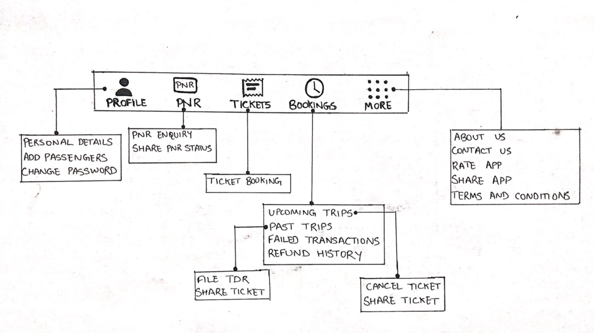

Indian Railway Catering and Tourism Corporation (IRCTC) handles online booking of train tickets, catering and tourism services for the Indian Railways. Around 5,50,000 to 6,00,000 bookings happen everyday. IRCTC Rail Connect is an Android app that aims to make the ticket booking process faster and easier.
The goal of the project was to evaluate the existing android ticket booking app and provide suggestions to enhance user experience for hassle free ticket booking.
I interviewed users and tested the usability of the existing app by making them perform a ticket booking task. This process helped me gain insights about various user groups and how they interact with the app. Here are two sample vidoes of the usability testing:


Following my user research, I conducted a Heuristic analysis of the app. This helped me figure out the reasons behind the identified pain points. I assigned a severity rating to each of the identified pain points.
I used the following heuristics to evaluate the usability of the app:
#user control and freedom #error prevention #flexibility and efficiency of use #aesthetic and minimal design #recognition rather than recallAfter finishing the reasearch and heuristic analysis, I created 2 hypothetical personas. These personas reflect people who use trains as their most preferred mode of transport and are aware of the different aspects of IRCTC’s ticket booking process.
Occupation: Homemaker
Behaviour: Tech savvy, fluent in english, spends most of the time at home, has used IRCTC before
Expectations: Wants to plan a vacation for her family 2 months from now
Occupation: Software engineer
Behaviour: Tech savvy, fluent in english, at his workplace from 10 AM to 7 PM, stays away from family, visits them every other month, has used IRCTC before
Expectations: Needs to book train tickets for his next trip home
I resolved to using a bottom navigation where all the content of the application is available upfront and arranged based on the priority of the functionality.
Ticket booking being the core functionality of the app, is placed at the center.
Many users check their ticket’s PNR status and visit previous bookings for cancellation.
The profile and other options are seldom used.

1. Easy login access with PIN.
2. Other loging option (username and password) is just one tap away in case user forgets
3. ‘Book Meal’, ‘Air Ticket’, and ‘IRCTC Tourism’ are lesser used features of the app. They are displayed as suggestions with PlayStore links.
 Find Trains
Find Trains
1. Simplified interaction: Demarcates Station input and Journey Date.
2. Input fields for Stations are appropriately highlighted for user input along with the option to swap
3. Journey date selection displayed in a separate section, and the options have same prominence to avoid confusion
1. User can view passenger list as she updates each passenger’s details
2. Easy to edit Boarding Point and Phone Number
3. The add passenger form opens in the same screen
1. Categorised the payment methods as per the appropriate category
2. Expanded views have list views so any one option can be selected on the same screen